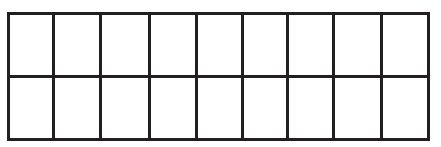
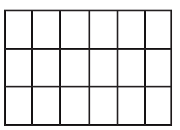
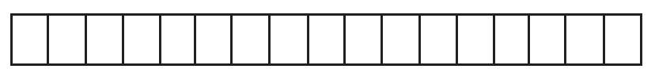
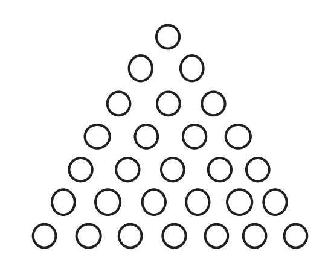
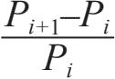
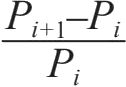

欧几里得的惊人时刻
在前面一讲，我们讲毕达哥拉斯时介绍了三角数、平方数，甚至还有五边数。但是我们从没谈过矩形数，为什么呢？
原因就是它们屡见不鲜。一个数只要能被比它小的数整除，就能表示为矩形。下图例子中给出了一个数的两种表达：

18=9×2

18=6×3
不能表达为矩形的数才有意思呢。准确来说，这种数只能被1和它本身整除，比如17。除了下图这样，没有别的矩形能表达了。

17=17×1
如果一个数只有两个不同的因数：1和它本身，那么称它为素数。不是素数的数叫作合数。
素数集合是这样的：2，3，5，7，11，13，17，19，23，29，31，37，41，43，47，…（如果你仔细阅读了素数的定义，就能明白为何1不在其列。）素数构造了全体自然数，因为每个合数有且仅有一种以素数乘积来表示的方法，其中每个素数可以出现不止一次，例如，72=2×2×2×3×3=23×32。
对于那些并不自命为数学家的人来说，每个合数有且仅有一种素数的因数分解这件事显而易见。但是对于数学家来说并不简单——他们必须努力来证明它。可别嫌数学家拘谨，在历史上很多看起来“显而易见”的事，最终都被证明是错误的，所以数学家固执地坚持每个假说必须被证明出来才算正确。你可以假定一堆0加在一起还是0，但是在本书后面的部分，你可以看到一串0的和并不总是0。如果连0都不可信了，你又能信什么呢？
呵，我跑题了。我们回到素数的话题上吧。
我们跟素数慢慢建立联系，首先要问的是：“素数究竟有多少呢？”
第一个发现答案的是希腊数学家，几何之父——欧几里得。无论在何时何地学过几何的人都很熟悉他。我们都学过欧几里得的假设（公理）：两点之间只能有一条直线，平行线永不相交。事实上，经典的几何学就是以他的名字命名的，被称为欧氏几何。另外，虽然欧几里得发明几何学是在2000多年以前，但如今学校里教的跟他当年所写的一模一样。你能想象如今在生物学、化学或者物理学上还在教200多年以前乃至2000年前的知识吗？
欧几里得对历代文明有着深远影响。受影响的人之一就是哲学家中的哲学家——巴鲁赫·斯宾诺莎。斯宾诺莎被欧几里得用公理和基本概念构建几何学的做法深深倾倒，他把这种方法用到了他最重要的著作《伦理学》中。当然，斯宾诺莎在书中讨论的不是点和线，他考虑的是他的世界中神的概念和人的角色。但是，他提出观念的方式是纯粹欧几里得式的：斯宾诺莎表述了他的基本概念，设下特定公理，然后用公理去证明定理。事实上，斯宾诺莎的作品原名是Ethic a Ordine Geometric o Demonstra。该英文版书名译为中文是《伦理学》，而其拉丁文版书名译为中文后是《几何方式阐述的伦理学》。
回到欧几里得上。我们看他的“素数究竟有多少”的答案之前，先自己想想看。
首先，我们必须判断素数集合是有限的还是无穷的。
如果素数的数目是有限的，最大的素数是几？
如果素数有无穷多个，可以证明吗？
我们能找出某些巨大、超大的数是否不能被1和它本身以外的数整除，因而成为素数吗？
有能给出全部素数的公式吗？
欧几里得定理
素数有无穷多个。
这里我列举两种证明方法。一种很简洁，强调了欧几里得伟大的思想之美；另一种本质上是一样的，只是长一些，可帮助详细解释简洁的那种。
短证明
我们假设2，3，5，7，11，…，P是P（包括P）以下的全部素数。
现在我们构造一个新数S，S=（2×3×5×7×11×…×P）+1。
那么，S要么是素数，要么能被（一个或多个）比P大的素数整除。无论哪个，P都不是最大的素数。因此素数一定有无穷多个。
证毕。
你服气吗？如果服了，就可以跳过长证明；如果没有，就读下去！
长证明
这里我们也要假设有最大的素数，然后证明这是不可能的，以此来证明素数是无穷多的。（这种先给假设再证明假设不成立的证明方法，在数学的术语里叫作“反证法”。这种方法简单且优雅，在数学上完全是自然的，但是许多人最初接触这种思想时并不接受。）
如果素数是有限的，那就能找到最大的素数，我们记为P。现在，我们把所有素数写下来：2，3，5，7，11，13，17，…，P。
然后我们构建S，S=（2×3×5×7×11×…×P）+1。也就是说S等于我们名单里所有素数的乘积再加1。谁能整除S呢？
它不能被2整除，因为括号里有个偶数（2是表达式里的一个因数），再加上1，S就是奇数。
S也不能被3整除。理由相同：括号里式子的值能被3整除（因为3是表达式里的一个因数），因此加上1后就不能了（事实上，S被序列中的任何素数除都余1）。
S也不能被4整除，因为连2都不能整除它。事实上，一个数如果能被某数整除也就能被它的素因数整除。例如，能被6整除的数也能被2和3整除。
如果我们持续进行，再稍加思索，就能意识到S不能被5，6，7直到我们设定中的最大素数P和它以内的任何数整除，那就有两种可能性。
一种是S是比P大的素数。
另一种是S能被该序列以外的某个素数整除，也就是说，这是一个比P还大的素数（因为我们已经看到它不能被小于等于P的素数整除）。
无论哪种，这都与原命题“P是最大的素数”矛盾了。如果“P是最大的素数”这个命题引起了矛盾，就意味着根本没有“最大”的素数，也就是素数有无穷多个。
证毕（译者注：此处原版书为“QED”）。
重要提示：欧几里得的证明并不是构造性的，也就是说，他不是简单地举出一个又一个大素数。正如我们指出的，S未必是个素数，它可以是个合数，能被比P大的素数整除。
另外，也许你会好奇，所以说一下，上文中的“QED”来自拉丁文Quo dEr at Demon strand um，意思是“这就是我要证明的”。每个学数学的学生备尝艰辛完成了长长的证明过程后，都会在结尾自豪、欢喜地写上这个。斯宾诺莎经常用这个拉丁文缩写。有趣的是，欧几里得本人用的是OEΔ（来自希腊文原文），表示的是hoper eide deixai（ὅπԑρἔδει δεῖξαι）——“这就是我要展示的”的意思。
我要说明的如下。
假设3是现存的最大素数（这样的假设当然是大错特错的）。我们构建S，也就是（2×3）+1=7，那么7确实是个素数（S是比P大的素数）。对于S=（2×3×5）+1，S=（2×3×5×7）+1和S=（2×3×5×7×11）+1，这个可能性也成立。
但是，我们也对第二种可能（S能被比P大的素数整除）找到了例子：（2×3×5×7×11×13）+1=30031=59×509。
换言之，（2×3×5×7×11×13）+1就是能被更大的素数59和509整除的，它们都比13大，其中13临时扮演“最大的素数”的角色。因此，欧几里得的证明中并无矛盾——它完美无缺。
有趣的是，有人看过欧几里得的证明后，觉得如果没看的话他自己也能证，这样的人还不少呢。（嗯……把素数乘起来再加1，多容易啊！我不用两分钟就想出来了。）对大多数人来说，这只是幻觉。这个证明的简洁昭示着它巧夺天工，美不胜收。
我遇到过的很多数学家都认为欧几里得关于素数无穷性的证明是古往今来数学历史中的最美之笔。如果我是个重要的数学家，我当然也要附议赞成的。
梅森数与吉尼斯世界纪录
“素数有无穷多个”这个命题引出了我们永远无法列出全部素数的事实。永远会有比我们能列出的更大的素数。
“截至2018年发现的最大素数”，获得这个荣誉的是277232917-1。我可不推荐你把它计算出来写在本上——你的本子写不下，没那么多页。试想一下，宇宙之中原子的个数估计不到2320个，这样你就能理解277232917-1有多么惊人。这个数有23249425位，比前一个大素数多了将近100万位。那个次大的素数274207281-1是在2016年1月被发现的（它“仅仅”有22338618位）。相比之下，2320有将近96位。可见，每个“大”数只是相对而言！
顺便说一下，证明这个庞然大数是素数的不是自然人，而是一个网络上的项目，叫作互联网梅森素数大搜索（GIMPS）。
那么，什么是梅森数？正确的问题应该是，“谁”是梅森？形如2n-1的正整数叫作梅森数，其中指数n是素数。马林·梅森（1588-1648）是法国哲学家、神学家、音乐学家、数学家。（如果这串头衔不够令人印象深刻，我再补充一点：他是第一个测量声速的人。）
对中学知识记忆犹新的（或者在上中学的）人或许都知道：如果指数不是素数，梅森数也就不是素数。理由是这种数能拆成两个因数。下文中我们以26–1为例来说明：
26-1=22×3-1=（22-1）×（24+22+1）=3×21
换言之，如果指数是合数，对应的梅森数一定有因数分解，也就是合数。分解公式如下：
2nm-1=（2n−1）（1+2n+22n+2（m-1）n）
如果上式没抓住你的心，那也无妨。其实它也没那么重要。真正重要的是，如果指数不是素数，这个梅森数也不是素数。
如果合数的指数推出合数的梅森数，很自然的问题是，素数的指数能推出素数的梅森数吗？
我们检验一下。
22–1，23–1，25–1和27–1都是素数（对应3，7，31和127）。到此，很好。7之后的素数是11，但是（211–1）不是素数！211–1=2047=23×89。
很可惜啊，素数的指数竟不能推出对应的梅森数也是素数。如果能推出的话，我们就能轻易找出越来越大的素数了。比如，我们可以用上文中的巨大素数作为2的指数，再减去1，就得到新的更大的素数。这样的数得有2000万位。想象一下这何其浩瀚，简直超乎想象之涯。这个数究竟是不是素数？我不知道，估计我有生之年也知道不了。
同样，素数有无穷多个并不能推出梅森素数也有无穷多个。我们至今知道了50个梅森素数。
前8个是3，7，31，127，8191，131071，524287，2147483647。
第9个数是261–1，有19位。我就不费事写出来了（我觉得太麻烦了）。
梅森在1644年的文章中探索了这些以他名字命名的数。标题很动人：《数学物理思想》（Cogitata Physico-Mathematica）。他检验了257以内的素数，总结出对P=2，3，5，7，13，17，19，31，67，127，257，2P-1都是素数。其实正确的序列还略有不同，应该是P=2，3，5，7，13，17，19，31，61，89，107，127。
梅森的成功是否引人瞩目，你心中有数。
梅森数与完全数
你还记得我们在毕达哥拉斯那一讲说到的完全数吗？如果忘了，我再说一下：完全数就是因数之和等于它自身的数。欧几里得已经发现，如果2P-1是一个素数，那么把它乘上2P–1一定是完全数。（当然，欧几里得不会把它叫作“梅森数”。因为不仅梅森本人，而且他爷爷的爷爷的爷爷也还未出世呢。）
我来展示一下。23-1＝7，7是一个素数，因此（23-1）×22=28就是一个完全数。同样，25-1＝31，31是一个素数，因此（25-1）×24=496就是一个完全数。对已知的最大素数使用这种方法，我们就可以构造已知的最大的完全数：（277232917-1）×277232916。
我可不推荐你去计算这个数来检验它是否为完全数。我可以保证，这个庞然大数的因数之和就是它本身。用德国大哲学家伊曼努尔·康德的话说，“我要限制知识，为信仰留下地盘”。
好啦。现在我们不聊这些称得上吉尼斯世界纪录的大数了，来动动脑筋吧。
学数学的人来动脑筋
1）证明：如果2P-1是一个素数，那么（2P-1）×2P–1一定是完全数。
2）28是一个三角数。

所有偶的完全数都是三角数吗？
3）著名瑞士数学家莱昂哈德·欧拉（我们稍后会讲他）证明了逆命题也是对的。也就是说，所有偶的完全数都可以表示为（2P-1）×2P–1的形式，其中P和2P-1都是素数。
欢迎你自己试试，或者找找欧拉的证明[1]。
寻找神谕公式
好啦，现在我们了解了素数有无穷多个。按逻辑，下一个问题就是它们的出现有什么规律。有没有公式算出来的结果都是素数呢？有没有公式，可以用来算出全部素数呢？对于第n个素数，公式长什么样呢？
我们刚刚提过伟大的瑞士数学家莱昂哈德·欧拉，现在再来讲讲他。
1772年，欧拉注意到对于表达式n2+n+41（形如ax2+bx+c的表达式被称为二次多项式），在n小于40时算出的结果都是素数。例如，对n=0，1，2，3，4，5，6，我们得到对应的值：41，43，47，53，61，71，83（请注意它们之间的差是2，4，6，8，10，12）。
欧拉的公式不会源源不断给出素数，稍微懂点中学数学的人就知道，当n=41时，结果就不是素数。因为这时表达式的3项都能被41整除，意味着总和也能被41整除。
如果我们再多想想，我们就能意识到：当n=40时，公式给出的结果也不是素数。我们把公式写出来：
402+40+41=40×（40+1）+41=40×41+41
=41×（40+1）=412
它不仅不是素数，还是个完全平方数：1681。
请注意，1681有个非常有趣的性质：它不仅是完全平方数，它的两部分16和81也是完全平方数，这样子的四位数独一无二（这里我们忽略1600这种平凡的例子）。
注意：人们目前还没有找出哪个二次多项式ax2+bx+c被证明能构造无穷多个素数。
狄利克雷定理
当年我在特拉维夫-雅法大学上数论课，格里高利·弗赖曼教授给我们证明了以下定理：
如果a和b是互素的，也就是说它们除了1以外没有其他公因数，那么数列an+b能构造出无穷多个素数。
狄利克雷定理（提出者古斯塔夫·勒热纳·狄利克雷，1805-1859）的证明美妙得异乎寻常，但是讲解它要花4节课，并且涉及的数学知识远远超出本书所介绍的范围。既然我承诺过只用基础算术，我就讲得尽量简单些。
我们先选两个互素（也就是没有公因数）的数，例如a=3，b=4（请记住：这俩数本身不需要是素数，只要它们彼此互素即可）。我们的基础表达式就是3n+4。我们从n=1开始计算序列的数值。
这串序列是7，10，13，16，19，22，25，28，31，…
你现在大概已经观察到序列里不全是素数。但是，狄利克雷定理也没说它们全是。狄利克雷定理：如果a和b互素的话，该序列里会出现无穷多个素数；当然，也会出现无穷多个合数。这是明摆着的。例如，在3n+4的序列里，当n是4的倍数时，结果显然是合数。
顺便说一句，勒热纳·狄利克雷的名字来自一个有趣的故事。狄利克雷家族来自比利时的列日附近的一个小村利克雷。人们称他为“利克雷的青年”。
合数王国
许多年前，我受命在特拉维夫-雅法大学数学学院的一个非常特殊的项目里任职。贝诺·阿尔贝尔教授负责发掘在数学方面天赋异禀的高中生，我的工作就是在他们学习中学课程的同时教他们做一点学术研究。主要是想在他们完成高中学业或不久之后就能取得学士或硕士学位。
我曾经把我收藏的国际数学奥林匹克竞赛的题目给他们做。因为我认为难题见真知。以下就是我出过的一个热身题。
题目
写出100个连续的数，其中不包含素数。
你可能知道我的真正意图。如果你想要“参考答案之前自己思考”，这样很好。
小提示
这个练习不简单。首先，你当然会想到这串连续的数是从一个相当大的数开始的，我们已经知道从小的数开始不会有连续100个其中不掺一个素数的数。
继续思考。
你思考时，我想介绍给（或者说提醒）你一个能简化书写和思考的符号。显然，我现在引入这个符号自有道理，它能帮我们解题。它就是阶乘符号，也就是感叹号（！）。在数学里，n！定义成从1到n的乘积，也就是说n！=1×2×3×4×5×…×（n-1）×n。
例如，5！=1×2×3×4×5。（曾经有个学生在我介绍阶乘时缺课了，当他看到5！时，叫道：“5哇哦！”）显而易见5！是能被乘积里的所有因数整除的。换言之，n！能被1到n的所有数整除。
为了完整起见，我要指出将0！定义成1。所以n！=（n-1）！×n的基础定义公式是毫无问题的。
现在再试试解我们的问题吧！
有什么想法吗？没有的话接着读吧！
大提示
我希望我们在阶乘上花的工夫对你的解题有帮助。你可以确信这里面阶乘起了点作用，但是什么作用呢？
我们从哪个数开始试验？100！如何？不好吧，下一个数（100！+1）有可能是素数吗？
但是，如果……你找到答案了吗？
巨提示
或许我们该从（100！+2）开始试，这样似乎好一点，因为100！和2都能被2整除，所以它也能被2整除，不是素数。我们的方向是对的。
同样，下一个数（100！+3）能被3整除。然后持续下去……（100！+100）能被100整除。糟糕，接下来没法快速得知（100！+101）是不是合数了。
我们很接近答案了。但是，从（100！+2）到（100！+100）只有99个数。功亏一篑，惜哉惜哉。
等等！功亏一篑？为时未晚！稍加改动即可。
答案
我们可以把序列构造成从（101！+2）开始到（101！+101）结束。这样就有100个连续的数，而且毫无疑问，它们全是合数。
很显然，我们可以找到不掺一个素数的任意长的序列。例如，要找1000个连续的合数，我们只需从（1001！+2）开始。这当然意味着真正大的数里面，素数越来越少了[2]。
再谈素数的频度
随着数字越来越大，相邻的两个素数之间的差也越来越大。然而，有个定理把素数在自然数中出现的频率划了个上限，断言：当i趋于无穷，

趋于0，其中Pi表示第i个素数。我把这里的数学语言翻译成日常语言，这样不是数学家也能懂。上面的定理是说：当i变大时，相邻两个素数的差变小。序列从i=1开始（为清晰起见，第一行的i是1，则Pi就是第一个素数2；Pi+1就是第二个素数，也就是3。第二行i等于2，素数P2=3且P3=5，以此类推）：
（3-2）/2=1/2
（5-3）/3=2/3
（7-5）/5=2/5
（11-7）/7=4/7
（13-11）/11=2/11
.
.
.
（103-101）/101=2/101
.
.
.
（433-431）/431=2/431
.
.
.
（3539-3533）/3533=6/3533
.
.
.
可以看到，表达式

随着i的结果有变小的趋势（表达式的结果不是单调递减的，只是随着i变大有变小的趋势）。因为对于大素数，表达式结果的分子比分母小得多。这意味着相邻素数之差（就是分子）比素数本身增长得慢，于是就使分数变小了。尽管在开头几步计算的结果波动较大，但考虑到趋势，相邻素数之差跟素数本身相比还是越来越小的。
获得博士学位的捷径
尽管我们年年岁岁勤勤恳恳进行研究，但关于素数，我们知道的仍然远远不及我们未知的。
据我所知有几个问题（还有挺多）时至今日仍无人能解。或许你跃跃欲试了。哪怕你只解决了一个，我保证你能立刻获得一个数学博士学位并扬名立万。（如果你仍在读中学或大学，解决了这些问题你就“永远不用上课啦”。）真是好消息。
不过坏消息也挺坏。谁也不能灵机一动就解决这些问题。它们难得异乎寻常！难以想象数学家为了解决它们付出了多少努力。“天下没有免费的午餐”，经济学家是这么告诉我们的。那么，我再加一句：“没有盛宴不费千金。”
孪生素数、三胞素数、亲缘素数、姻亲素数
如果一对素数之间的差是2，那么称它们为孪生素数。例如：（3，5），（5，7），（11，13），…，（431，433）都是孪生素数。孪生素数有无穷多对吗？
任凭素数无穷多，断言轻易不能下。
三胞素数：小测验
（3，5，7）是素数三胞胎[3]。证明这是唯一的“孪生三胞胎”。
亲缘素数
像（3，7），（7，11），（19，23），…，（223，227）这样互相的差为4的素数对被称为亲缘素数。它们会有无穷多对吗？
姻亲素数
差为6的素数对被称为姻亲素数。（看看在数学家心里什么才是姻缘！）如今，只有很少几对姻亲素数：（5，11），（7，13），（11，17），（17，23），（23，29），…，（191，197），…。
看看这关系！5的配偶11也跟17成双，17再与23纠缠，23这家伙又搭上了29，但是29对23忠贞不贰。真是“浪漫”小说的好素材啊！
孪生素数、亲缘素数、姻亲素数到底是有限的还是无穷多呢？谁也不知道。
给数学家的提示：素数倒数的收敛性
我们观察一下只包含孪生素数的级数：
（1/3+1/5）+（1/5+1/7）+（1/11+1/13）+…+（1/857+1/859）+…
1915年，挪威数学家维果·布朗证明了一个定理。该定理以他的名字命名，使他扬名至今。在定理中，布龙展示了上述级数收敛，其和趋近1.9（1.90216…）。
如果这个级数是发散的，我们就能得出孪生素数有无穷多对。但是，它是收敛的，与孪生素数有穷或无穷不关分毫。
如果我们能证明这个级数不能表示成分数——这种数叫作无理数，问题也就解决了，也就是说有无穷多对孪生素数（因为有限多有理数的和还是有理数）。但是，结果是有理数，这与孪生素数有穷无穷没有关系。（我们稍后就给数学门外汉讲讲有理数与无理数。）
亲缘素数的级数（1/7+1/11）+（1/13+1/17）+（1/19+1/23）+…是收敛的，其和趋于1.197（1.1970449…）。
平稳素数
如果一个素数中的数码任意排列还是素数，那么称它为平稳素数。例如，199是平稳的，因为919和991也都是素数。13也是个平稳素数，因为13和31都是素数。
你可以在计算机上运行个程序来找平稳素数，然后发现除了前面寥寥几个（最后一个是991），其他的平稳素数都是由重复的数码1构成的。开头的就是1，111，111111，111111111。
还有个开放的问题如下：比991大的平稳素数都是由1构成的吗？小提示：能构成平稳素数的数码只有1，3，7和9。显而易见，如果里面含了偶数或者5，某些排列得到的就是合数了。
回文数
回文就是从前往后和从后往前读起来一样的文字。“I prefer pi”就是一个回文的例子。（译者注：中文的回文例子也有很多。）回文数里有素数吗？有啊，事实上还不少呢：919，101，14741，…，激动人心的例子还有许多（已证的最大回文素数有将近50万位）。然而，这样的数是有限的还是无穷的还悬而未决。削好铅笔，备好计算机，你来自己试试看吧！
勒让德猜想
18世纪法国数学家阿德利昂·玛利·勒让德（1752-1833）提出了一个猜想：在n2与（n+1）2之间一定至少有一个素数。
我们对n=2检验一下。在22=4与32=9之间，有素数5和7。许多数学家直觉上认为这个猜想是对的，但是如我们已经讲过的，做数学不能只凭直觉。
在前文《合数王国》章节里，我们学习了如何找一个连续的合数序列（也就是不掺杂素数），想要多长有多长。曾经在我的课上有学生认为这个方法与勒让德猜想矛盾，然后说它错了。其实他错了，因为我们不可能在指定的地方随心所欲地造序列。如果你还记得的话，在我们的例子里，100个连续的数的序列开始于100！。100！是庞然大数[4]，这串数位于两个间隔很大的连续平方数之间，理论上还是给至少一个素数留了地方的。我们观察如下100！的平方与（100!+1）的平方之间的间隔（也就是差）。
（100！+1）2–100！2=（100！2+2×100！+1）–100！2=2×100！+1。间隔也是天文数字啊！
就在我写本书之际，还没有人证明勒让德猜想是真是假。
数学世界中的女人
到现在为止，我们遇到的大部分数学家都是男人。历史上就没有重要的女数学家了吗？有的，而且人才济济呢！这里我先暂停素数的话题，给你们讲一些成就卓著的女数学家。据说，历史上最伟大的两个女数学家分别是俄罗斯数学家索菲娅·柯瓦列夫斯卡娅（1850-1891）和德国犹太数学家艾米·诺特（1882-1935），她们都是爱因斯坦的忠实崇拜者。
心中无诗意，必非数学家。
——索菲娅·柯瓦列夫斯卡娅
但是，更早的历史上就已经出现了女数学家。
古代世界
传说毕达哥拉斯之妻——克罗顿的西雅娜，就是个数学家和物理学家，她还涉猎医学和心理学——这个女人比文艺复兴还文艺复兴。“数学第一人”（指毕达哥拉斯）的女儿达莫，也为数学深深着迷。作为毕达哥拉斯学派的一员，她很可能对父亲教义的发展做了相当的贡献。
亚历山大的希帕提娅（生于4世纪的后半叶）毫无疑问是古代世界最著名的女数学家。其父是数学家、哲学家西昂，他想要把女儿培养成“完人”的样子，于是教给了她当时全部的知识。西昂不但把自身学识全部传授给了女儿，还送她去雅典和罗马学习。大部分传记作家指出希帕提娅在数学上的成就已经超越了她的父亲。
希帕提娅确实是多才多艺之人。她在亚历山大里亚学习柏拉图和亚里士多德的哲学。她也是当时有名的天文学家，写了《天文经典》一书，用一系列图表描绘天体运行情况。希帕提娅也因美貌闻名，但据传记记载她终身未婚。
希帕提娅的故事是个传奇，迟早会有电影来刻画她的生平——西班牙导演亚历桑德罗·阿曼巴接受挑战，拍了电影《城市广场》（2009）。当然，电影里包含了一段爱情故事。
索菲·热尔曼
我们讲讲索菲·热尔曼，她的故事关乎素数的世界和开放的大问题。
1776年，索菲·热尔曼生于巴黎（亡于1831年）。西蒙·辛格尽管生命遭受威胁仍不放弃数学，最终丧命于罗马士兵之手。索菲对此深受震动，认为如果深探数学奥境，定是妙趣横生，美不胜收。（倘若她得知伯特兰·罗素3次为多学点数学而放弃自杀，会更生敬畏之心吧。）
即使索菲既没正式学过数学也没文凭，她对数学的贡献也非常多，尤其是对微分几何与数论。她在数论领域有个重要贡献：把费马大定理的可能解砍掉了一些。索菲获得过法国科学院的数学竞赛资助，是参加科学院讨论班的首名女性。在巴黎有一个街区和一所学校以她的名字命名，更不用说金星上还有一座名叫热尔曼的火山了。
索菲·热尔曼素数
我们回到素数的开放问题。
如果P是一个素数，并且2P+1也是个素数，那么称P为索菲·热尔曼素数[5]。请看一些例子：2，3，5，11，23，29，41，53，83，89，…。比如说5位列其中，因为2×5+1=11，11也是素数。另外，7不在其中，因为2×7+1=15（15不是素数）。
聪明的读者已经想到有个无人能解的问题：热尔曼素数有无穷多个吗？确实有此一问。不过你们也可以想想其他有趣的问题嘛。
（慢慢思考一下。）
坎宁安链
请看以下序列：2，5，11，23，47。2是个热尔曼素数。把它乘2再加1就是素数5，5也是热尔曼素数；一番操作得11，11也是热尔曼素数；一番操作得23，23也是热尔曼素数；一番操作得47。但是也就到此为止了，因为47×2+1=95，95可不是素数。这个序列里有4个热尔曼素数，再加个尾巴。这种热尔曼素数串叫作坎宁安链，它以英军数学家阿兰·坎宁安的名字命名。
现在问题来了。
·坎宁安链还能更长吗？是的，能。我自己的计算机使用水平太弱了，就来个6节的小链吧：89，179，359，719，1439，2879。
·坎宁安链能做到长度任意吗？
·如果用2P-1代替2P+1怎么样？
·讨论4P+1或4P-1可有意义？
哈！问起来容易解答难！
哥德巴赫猜想，或曰谁想成为百万富翁
1742年，大事频出：约翰·塞巴斯蒂安·巴赫谱出《哥德堡变奏曲》（真正的数学家对此无不心怀敬意）；爱德华·杨写下《夜之思——死亡与不朽》；当年6月7日，寂寂无闻的普鲁士数学家克里斯蒂安·哥德巴赫致信瑞士大数学家莱昂哈德·欧拉（我们一次又一次读到他的事迹）。
时至今日，欧拉仍是古往今来成果最多的数学家。他在数学的不同领域著书浩浩80卷。反之，哥德巴赫的荣誉是成为俄国沙皇彼得二世（彼得大帝之孙）的顾问。尽管欧拉和哥德巴赫一个是瑞士人，一个是普鲁士人，他俩却都在彼得大帝建立的圣彼得堡科学院工作。
哥德巴赫在致欧拉的信中提出了如今鼎鼎大名的哥德巴赫猜想，该猜想是在数论乃至全数学领域里最古老又最有名的开放问题。它提出：从4开始的每个偶数都能写成两个素数之和（这是猜想的现代版本）。例如4=2+2，6=3+3，8=3+5，…，大偶数写成素数之和有多种写法，比如40=3+37=11+29=17+23。
我们对提出这个问题的年份1742试试看，比如写成1742=13+1729。
（你注意到没？1729就是哈代去探望拉马努金时乘坐的出租车车牌号！）
所以，把厄运之数13加上1729就能得到1742了。只剩一个问题：如你所知，1729=19×91，它并不是素数。当然我们很容易找到其他解，比如1742=19+1723或者1742=43+1699……不妨检查一下，这些都是素数哦！你也可以自己把1742拆成两个素数的和。
在众多关于素数的开放问题之中，毫无疑问，哥德巴赫猜想最为著名，孪生素数猜想还排在它后面。论及熟知和有趣，其他问题又跟这两个差了好远。
2000年，希腊数学天才阿波斯托罗斯·杜克西阿迪斯的著作《佩特罗斯叔叔与哥德巴赫猜想：数学梦的故事》出版。出版商托比·费博提出：给2000年4月之前解决哥德巴赫猜想的人100万美元作为奖励。这可是大手笔——冒最小的风险获得最大的收益，但事实上没人真站出来领奖。在此之后解决该问题的人能获得保罗·厄多斯提供的奖金，只是金额少些（但规格高些）。
解决哥德巴赫猜想有两条路：找一个不能表示为两个素数之和的偶数（如你所知这个叫反例），或者证明为何所有偶数都能被这样表示。迄今，人们已经检验了天文数字般的偶数（大到1018），每个都能写成两个素数之和。尽管如此也无法证明。即使我们已经检查到了1000000000000000！（1000万亿的阶乘），并且发现每个数都能写成两个素数之和，但依然怀疑下一个数1000000000000000！+2就是反例，能推翻猜想。
哥德巴赫变奏曲
道格拉斯·霍夫施塔德在他的书《哥德尔、艾舍尔、巴赫：集异璧之大成》里建议考虑哥德巴赫猜想的变体：每个偶数都能写成两个素数之差吗？（我们叫它哥德巴赫-哥德堡变奏曲好不好？）
我们试试看：2=5–3，4=7–3，6=11–5，8=11–3。显然有的数有多种写法：10=（41–31）=（29–19）=（23–13）=（17–7）=（13–3）。
尽管这两个问题听起来差不多，却有本质差异。对于原版的哥德巴赫猜想，我们可以对每个偶数用计算机程序在有限时间内检查是否为两个素数的和。数再大也无妨，程序总归能运行完。对另一个版本，程序能否运行完就没谱了。我们任取一个数，就2010吧，完全说不准程序运行到什么时候是个头。因为即使我们检查了12345678910以内的所有素数，也没找出一对的差为2010，那也不能说明以后就找不到啊！（我拿2010举例只是表达这个思想。其实计算机费不了多少工夫就能把2010写成素数之差，比如2017-7，2029-19，2039-29及其他写法。）这个跟检验2010能否表示成两个素数之和（你已经知道这是可以的，最简单的分解是2003+7）大不相同。
区别在于：找和有有限种可能——只要去检查那个数以内的素数即可。对于2010，我们只要检查2007（2010以内的最大素数）以内的。即使我们要查的不是2010而是2010！，结果也有限，用程序花有限的时间就能运行出来（比人想得久一点，但时间仍然有限）。
但对于差，我们要在比那个数大的无穷个素数里探索，范围无边无际，或许花的时间没完没了。
哈代致敬费马
皮埃尔·德·费马（1601-1665）发现了一些跟素数相关的有趣的事，称为费马素数定理。他指出：任何形如4n+1的素数（例如5，13，17，29，…）都是两个平方数之和；任何形如4n–1的素数（例如3，7，11，19，…）都不可能是两个平方数之和。2以上的素数要么形如4n+1，要么形如4n-1。（你可以自己证明看看。）
例如，41是形如4n+1（4×10+1）的数，可以表示成平方和（52+42）。另外，19（4×5-1）是另一类，就不能表示为两个数的平方和。以19为例证明它不能表示为两个数的平方和容易，一般性地证明费马素数定理却很难。
G.H.哈代在他的书《一位数学家的自白》中把费马的上述发现总结为“优雅的数学”，是欧几里得证明素数的无穷性之后最美妙的数学定理。
嗯嗯，说到“总结”，此刻我们该归纳总结一下素数秘传，然后向无穷的世界进发。
端详数学，非但极真，更是极美——冷静严格，美如雕塑，毫无弱点。不似音画，绚烂无度。纯净高尚，坚实完善，道之极致。
——伯特兰·罗素
[1]提示：找能整除该数的最大的2的幂，那就是P-1。
[2]素数定理指出：n附近素数的比例（差不多）是n的对数除以n。当n趋于无穷时，这个比例是趋于0的，由此得出自然数里素数是很稀疏的。
[3]素数三胞胎是形如（P，P+2，P+6）或（P，P+4，P+6）的三元组。这个就是离得最近的三连素数了。因为连续3个奇数中必有3的倍数，（除去3本身）那就不是素数了。例外的是（2，3，5）和（3，5，7）。
[4]简言之，100！就是933262154439441526816992388562667004907 1596826438162146859296389521759999322991560894146397615651828625369 7920827223758251185210916864000000000000000000000000。
[5]她用这种数探索费马大定理，所以以她的名字命名这种数。